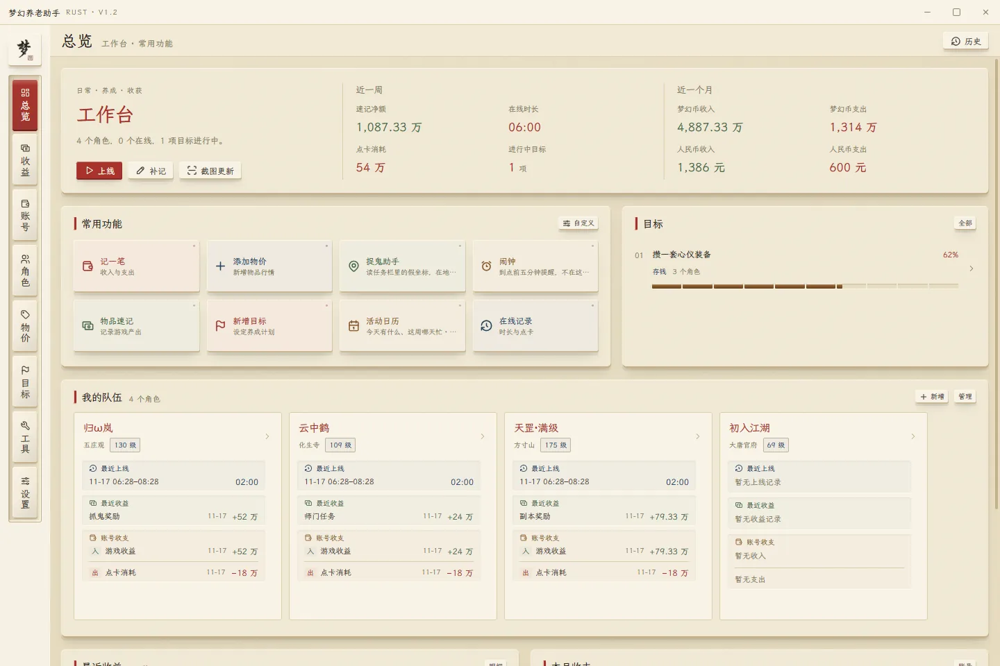
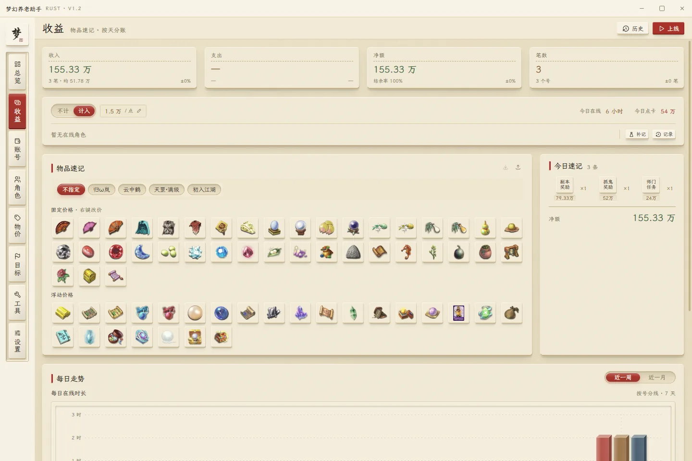
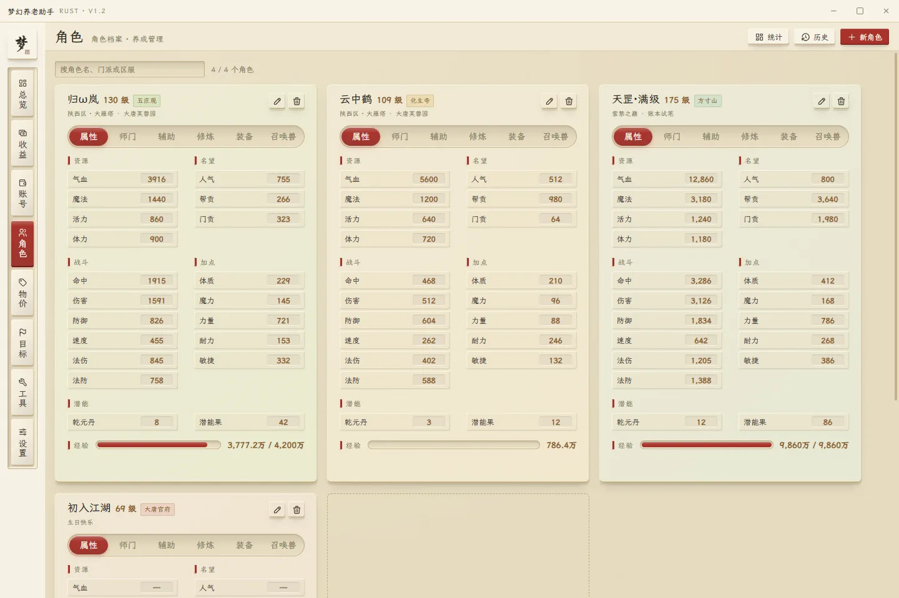

梦幻养老助手
一个记录梦幻西游端游收益、整理角色档案和养成进度的 Windows 桌面工具。
梦幻养老助手是我给自己写的梦幻西游端游工具，主要用来记收益、整理角色档案和查看养成进度。
首页能看到最近一周的速记、在线时长和点卡消耗，以及近一个月的梦幻币、人民币收支。

记账
日常产出可以点物品图标速记，按设好的单价估值。几个号一起上线，也能分别计时、计算点卡消耗。
账号页记录买卖游戏币、充值和装备交易等实际收支，人民币和梦幻币分开算。通过藏宝阁卖币时，可以扣除手续费再记实得金额。物价页则用来留存平时的报价，方便之后查。

角色
属性、技能、修炼、装备和召唤兽都放在角色档案里。支持本地截图识别，读完后核对一下再保存，不必逐项手抄。
养成目标可以根据档案计算进度，存钱和装备目标手动记；成长历史里能查看之前的变化。

日常使用
另外做了活动日历、提前五分钟提醒的闹钟、捉鬼助手和游戏图鉴。外观有六种主题，明暗、字体和字号可以单独调。
不用注册账号，记账和截图识别都在本机完成。数据保存在 %APPDATA%\mh-tool-rs，支持导入、导出和备份恢复，自动保留最近 14 份日常备份。升级和卸载不会主动删除账本，重要数据还是建议另存一份。
文中截图均为演示数据。
下载
支持 Windows 10 2004 及以上版本和 Windows 11 x64，安装包在 GitHub Releases。
项目使用 Rust + Tauri 2 + Vue 3 + TypeScript，数据存储用 SQLite。开发环境和启动方式见仓库说明。
源码采用 PolyForm Noncommercial 1.0.0，限非商业用途。本工具与游戏官方无关，游戏资源版权归原权利人。